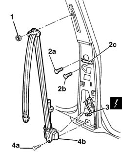
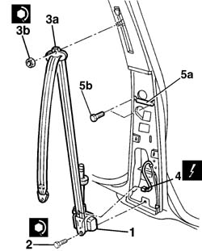

7065A12 FRONT SEAT BELT (ONE), LEFT OR RIGHT, WITH PRETENSIONER ON REEL - R.R.
- Path
- Procedures > 70 FITTINGS > 7065 SEAT BELTS AND ACCESSORIES > 7065A FRONT SEAT BELTS > 7065A12 FRONT SEAT BELT (ONE), LEFT OR RIGHT, WITH PRETENSIONER ON REEL - R.R.
- Kind
- repair procedure (removal / refitting; the operation number is the code)
- Applies to
- all engines; all production periods
- Interactive page
- https://sloeber94.github.io/elrnDB-lThss/en/#/115283
Applies to: all engines; all production periods
 Removing
Removing
 Refitting
Refitting- Disconnect the negative battery terminal.
See in Op. 7040H36 CENTRE PILLAR TRIM LOWER ELEMENT (one), left or right - R.R.
See in Op. 7040H38 CENTRE PILLAR TRIM UPPER ELEMENT (one), left or right - R.R.
1. Undo the nut fixing the seat belt height adjuster.
2. Undo one bolt (2a) fixing the bracket to the pillar and loosen the bolt (2b) rotating the bracket (2c).
3. Disconnect the electrical connection.
 | Description | Connector |
|---|---|---|
3 | Driver's front seat belt pretensioner | Q020 |
| Description | Connector |
|---|---|---|
3 | Front passenger seat belt pretensioner | Q021 |
4. Undo the fixing bolt (4a) and remove the seat belt and pretensioner (4b).

Applies to: all engines; all production periods
- Place the pretensioner in the special cupboard, resting it on a free surface.
Applies to: all engines; all production periods
Refitting
Removing1. Reposition the pretensioner.
2. Tighten the bolt to the recommended torque.
 | Value - daNm | Fastening | Component | Ø |
|---|---|---|---|---|
2 | 4 | Bolt | SEAT BELT REEL SECTION | 7/16" |
3. Position the seat belt idler (3a) and tighten the nut (3b) to the recommended torque.
| Value - daNm | Fastening | Component | Ø |
|---|---|---|---|---|
3b | (upper fastening to centre pillar) 4 | Nut | SEAT BELT REEL SECTION | 7/16" |
4. Connect the electrical connection.
| Description | Connector |
|---|---|---|
4 | Driver's front seat belt pretensioner | Q020 |
| Description | Connector |
|---|---|---|
4 | Front passenger seat belt pretensioner | Q021 |
5. Rotate the bracket (5a) on the pillar, placing it in the correct position and tighten the fixing bolts (5b).

Applies to: all engines; all production periods
See in Op. 7040H38 CENTRE PILLAR TRIM UPPER ELEMENT (one), left or right - R.R.
See in Op. 7040H36 CENTRE PILLAR TRIM LOWER ELEMENT (one), left or right - R.R.
- Connect the battery terminal.